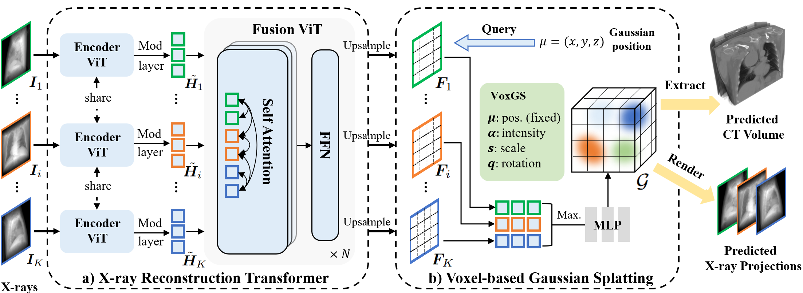

Research Interests:
I am currently a third year Ph.D. student in the Department of Electronic Engineering, Chinese University of Hong Kong (CUHK), supervised by Prof. Yixuan Yuan. Before that, I received B. Eng. degree in Electronic Information Engineering from the Huazhong University of Science and Technology (HUST) in 2021. During my Ph.D. studies, I was fortunate to work with Dr. Zhenwei Wang and Dr. Tengfei Wang from Tencent Hunyuan3D, World Model Team.
(*equal contribution)
|
Preprint
|
WorldMirror: Universal 3D World Reconstruction with Any-Prior PromptingarXiv preprint 2025 A universal 3D reconstruction framework capable of processing diverse input modalities and generating various output representations. |
|
Preprint

|
X-GRM: Large Gaussian Reconstruction Model for Sparse-view X-rays to Computed TomographyarXiv preprint 2025 A pioneering feedforward 3D Gaussian Splatting approach for CT reconstruction. |
|
CVPR 2025
|
MonoSplat: Generalizable 3D Gaussian Splatting from Monocular Depth Foundation ModelsIEEE/CVF Conference on Computer Vision and Pattern Recognition (CVPR 2025) A generalizable 3D Gaussian Splatting approach from monocular depth foundation models. |
|
ICLR 2025
|
InstantSplamp: Fast and Generalizable Stenography Framework for Generative Gaussian SplattingInternational Conference on Learning Representations (ICLR 2025) An initial exploration into embedding customizable, imperceptible, and recoverable information within the renders produced by off-the-line 3D generative models, while ensuring minimal impact on the rendered content's quality. |
|
IEEE TMI 2025
|
Foundation Model-guided Gaussian Splatting for 4D Reconstruction of Deformable TissuesIEEE Transactions on Medical Imaging (IEEE TMI), 2025 The first work to apply 3D Gaussian Splatting for dynamic (4D) endoscopic reconstruction, guided by foundation models. |
|
IEEE TMI 2023
|
GRAB-Net: Graph-based boundary-aware network for medical point cloud segmentationIEEE Transactions on Medical Imaging 42 (9), 2776-2786 A graph-based boundary-aware network for medical point cloud segmentation with improved boundary detection capabilities. |